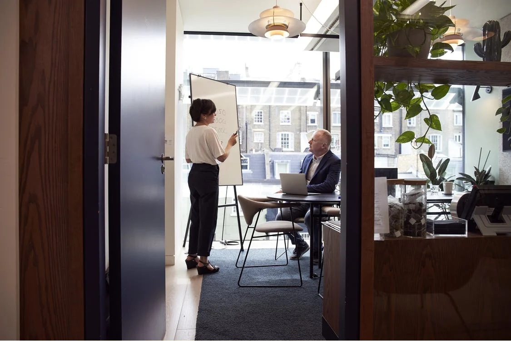

De macro omgevingsanalyse van ASML.
De vraag naar chips is groter dan het aanbod. ASML moet de capaciteit met meer dan 50 procent verhogen. ASML is daarvoor afhankelijk van de leveranciers voor bijvoorbeeld lasers, glazen en spiegels voor de machines. Leveranciers kunnen niet altijd de productie verhogen (bron). Leveranciers en ASML bouwen extra productieomgevingen om aan de vraag te voldoen (bron).
De vakbonden CNV Vakmensen en FNV Metaal schorten de onderhandelingen met ASML op. De onderhandelingen gaan over afspraken om de vakbondscontributie onder te brengen onder de werkkostenregeling en de uitbetaling van de eenmalige uitkering principe akkoord Metalektro. Er is een procedure gestart bij het kantongerecht (bron).
ASML heeft de eerste aanvraag voor een green bond senior notes geplaatst. Deze green bond heeft een hoofdsom van €500 miljoen. ASML verwacht een bedrag gelijk aan de netto-opbrengst van dit aanbod te gebruiken voor de financiering en/of herfinanciering, geheel of gedeeltelijk, van nieuwe of bestaande commerciële vastgoedprojecten die in aanmerking komen voor groene projecten en voldoen aan de vereisten van het Green Bond Framework (bron).
Hoogopgeleide mensen met een technische achtergrond zijn schaars op de arbeidsmarkt en de concurrentie groeit. Meer ingenieurs en softwareontwikkelaars zijn nodig om innovatieve oplossingen te ontwikkelen. Het aantal tech banen is verwacht aanzienlijk te groeien, maar het is een uitdaging om het tekort aan gekwalificeerde kandidaten te vullen (bron).
ASML concurreert vooral met Canon en Nikon met betrekking tot DUV systems. Canon en Nikon hebben aanzienlijke financiële middelen en brede patentportefeuilles. In ongunstige marktomstandigheden, overcapaciteit in de industrie of een daling van de waarde van de Japanse yen naar de euro neemt de prijs concurrentie toe, wat resulteert in lagere prijzen en lagere verkoop en marges (bron).
Er is een enorme stijging in de vraag naar mature-node halfgeleiders die ASML's meest geavanceerde scanners niet nodig hebben – dry DUV (ArF of KrF) is meestal meer dan goed genoeg. Deze omvatten power ICs, sensoren en microcontrollers. De vraag naar niet-halfgeleider toepassingen zoals displays voor virtual-reality goggles en fotonische apparaten is ook aan het groeien. De opkomst van augmented en virtual-reality-technologie biedt unieke kansen voor fotonicabedrijven (bron).
KLAC is een concurrent van ASML. KLAC en ASML werkte samen aan analysesoftware-opties die chipmakers in staat stellen om automatisch overlay-testgegevens over te dragen tussen KLAC overlay-metrologietools en ASML stepper en Step & Scan-lithografietools. De Metrology data Interfaces kunnen overlay test wafers van een ASML tool meten op een KLAC overlay metrology tool. Nadat de metingen zijn voltooid, worden de interfaces gebruikt om de ruwe gegevens opnieuw in de stepper of scanner te importeren. De exposure tool converteert en modelleert de gegevens om te bepalen of bijstelling of aanpassingen nodig zijn. Deze optie maakt het mogelijk metrologische activiteiten offline uit te voeren, waardoor tijd wordt vrijgemaakt voor de exposure tool om wafers te blijven modelleren. Het maximaliseren van het gebruik van halfgeleiderapparatuur is van cruciaal belang voor het verbeteren van de algehele efficiëntie. De mogelijkheden van de Metrologie data Interfaces zijn beta getest op ASML scanners en KLAC overlay meetinstrumenten en helpt de productiviteit te verbeteren en het rendement op investeringen te verhogen (bron).
